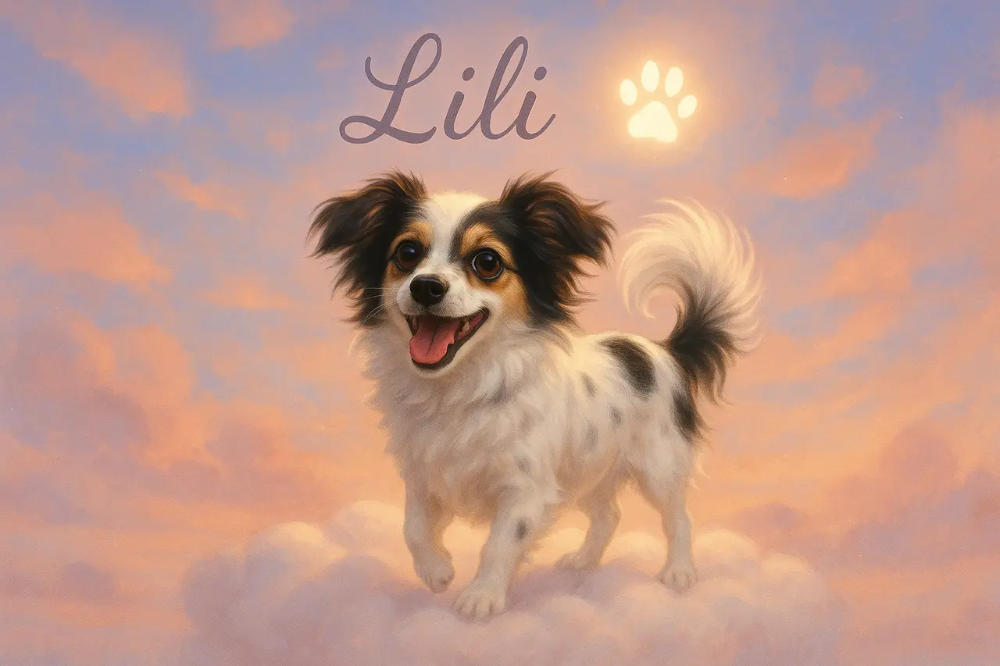

In Erinnerung
Für Lili.
Mein Herz auf vier Pfoten – und ein Platz, der für immer ihrer bleibt.

Wenn Pfoten Spuren hinterlassen
Manche Begleiter gehen. Ihre Nähe bleibt.
Diese Seite ist kein Projekt und keine technische Spielerei. Sie ist ein stiller Ort für einen kleinen Hund, der einen riesigen Platz im Leben hatte.
Du kamst auf leisen Sohlen, ein Wirbel aus Licht und Fell,
und wo ich stürzte, hast du gewartet – treu, geduldig, hell.
In dunklen Tagen warst du Sonne, ein Blick – und alles stand still.
Jetzt wachst du aus den Wolken, und mein Herz ruft einfach: Lili.